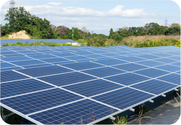
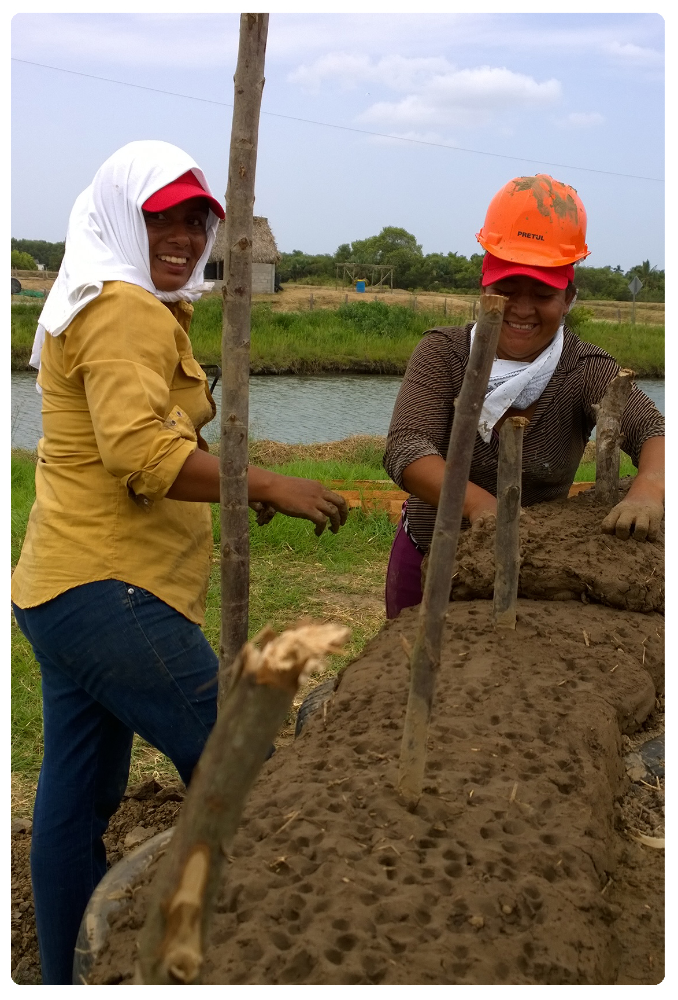

El cambio climático es un problema global y de no tomar acciones para combatirlo nuestra civilización, biodiversidad e infraestructura podrían resultar amenazadas ante sus efectos.
La Convención Marco de las Naciones Unidas sobre Cambio Climático establece como objetivo medular: lograr la estabilización en niveles no peligrosos de las concentraciones de gases de efecto invernadero (GEI) en la atmósfera. La Conferencia de las Partes del año 2015 o COP21, resultó en el compromiso más importante a nivel mundial para enfrentar el cambio climático, el Acuerdo de París, firmado hasta el momento por 197 países, con el objeto de limitar el aumento de la temperatura promedio del planeta por debajo de los 2° C en este siglo.
La implementación tanto de medidas de mitigación orientadas a la reducción de las emisiones de gases y compuestos de efecto invernadero, como de medidas de adaptación que permitan disminuir la vulnerabilidad de las comunidades humanas y los ecosistemas, representan las dos grandes alternativas de acción frente al cambio climático.

El cambio climático potencia los problemas sociales, económicos y ambientales existentes, tales como la pobreza, la desigualdad social, la escasez de alimentos, el deterioro de la salud de la población y la degradación y pérdida de los recursos naturales, entre otros. El cambio climático puede aumentar el impacto en la disponibilidad, costo y distribución de los servicios, lo cual afecta a las poblaciones más vulnerables.

| ant | menu | SIG |
|---|